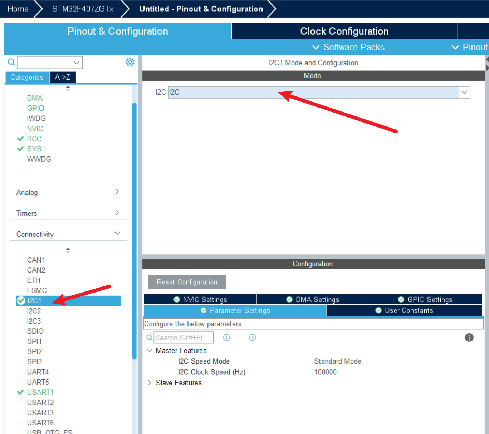
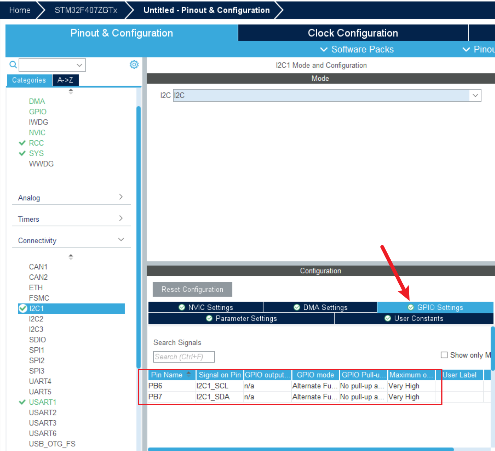
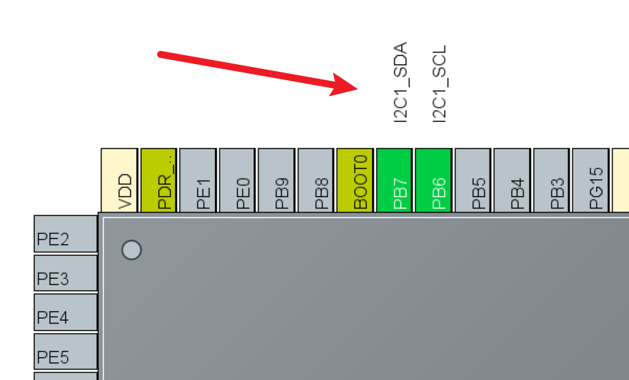

<!DOCTYPE lake>
<h2 data-lake-id="A3t2T" id="A3t2T"><span data-lake-id="u64a3f477" id="u64a3f477">学习目标</span></h2><ol list="uf0c9a9a4"><li data-lake-id="uf5f09f01" fid="ub3076963" id="uf5f09f01"><span data-lake-id="u31a9a7e4" id="u31a9a7e4">掌握I2C配置方式</span></li><li data-lake-id="ub875b642" fid="ub3076963" id="ub875b642"><span data-lake-id="u263a62d6" id="u263a62d6">掌握I2C读写操作</span></li></ol><h2 data-lake-id="YRLDc" id="YRLDc"><span data-lake-id="u5c8433f1" id="u5c8433f1">学习内容</span></h2><h3 data-lake-id="EBzXX" id="EBzXX"><span data-lake-id="uc7dd3c37" id="uc7dd3c37">需求</span></h3><p data-lake-id="uf1bd9d6e" id="uf1bd9d6e"><span data-lake-id="u000690b6" id="u000690b6">开发板中的PCF8563的RTC时钟设置和读取。</span></p><p data-lake-id="u66d5b4cf" id="u66d5b4cf"></p><h3 data-lake-id="jkmqi" id="jkmqi"><span data-lake-id="u60b59c70" id="u60b59c70">I2C功能配置</span></h3><p data-lake-id="ucb630398" id="ucb630398"></p><p data-lake-id="uc6c6301f" id="uc6c6301f"><span data-lake-id="u5b07e6ec" id="u5b07e6ec">选择对应的I2C，打开。</span></p><p data-lake-id="u5d1ed985" id="u5d1ed985"></p><p data-lake-id="u19437e8b" id="u19437e8b"></p><p data-lake-id="uf0393142" id="uf0393142"><span data-lake-id="u3f6e1870" id="u3f6e1870">配置完成后可以查询引脚是否符合要求。</span></p><p data-lake-id="u5ba4286f" id="u5ba4286f"><span data-lake-id="u450cd248" id="u450cd248">​</span><br/></p><h3 data-lake-id="C2Kx8" id="C2Kx8"><span data-lake-id="udbf3ca8c" id="udbf3ca8c">I2C编码</span></h3><h4 data-lake-id="Rxkqg" id="Rxkqg"><span data-lake-id="ua4c4fd07" id="ua4c4fd07">移植PCF8563驱动</span></h4><span class="yuque-card-unsupported">[codeblock]</span><span class="yuque-card-unsupported">[codeblock]</span><p data-lake-id="u1775904f" id="u1775904f"><span data-lake-id="u1f760516" id="u1f760516">只需要实现 i2c_write和i2c_read，驱动就可以正常运行。</span></p><span class="yuque-card-unsupported">[codeblock]</span><h4 data-lake-id="E1iu8" id="E1iu8"><span data-lake-id="uf51c4c8e" id="uf51c4c8e">I2C读写实现</span></h4><p data-lake-id="u3044e99a" id="u3044e99a"><span data-lake-id="u0d277b1a" id="u0d277b1a">添加头定义</span></p><span class="yuque-card-unsupported">[codeblock]</span><p data-lake-id="u1b0a69a7" id="u1b0a69a7"><span data-lake-id="u3047bc75" id="u3047bc75">添加c实现</span></p><span class="yuque-card-unsupported">[codeblock]</span><ul list="u12e1d361"><li data-lake-id="u5ed4aec9" fid="u2bf72d14" id="u5ed4aec9"><span data-lake-id="u6f308407" id="u6f308407">HAL库的设备地址，要的是具体的读写地址。</span></li><li data-lake-id="uf802a076" fid="u2bf72d14" id="uf802a076"><span data-lake-id="u2de9d537" id="u2de9d537">HAL库中的写操作中的数据，包含了寄存器地址。</span></li><li data-lake-id="u8ed6489b" fid="u2bf72d14" id="u8ed6489b"><span data-lake-id="u6acecdcd" id="u6acecdcd">HAL库中读操作，需要先写再读。</span></li><li data-lake-id="u3935992a" fid="u2bf72d14" id="u3935992a"><span data-lake-id="ue0030081" id="ue0030081">返回值不是读写的数据，而是读写成功与否的枚举值</span></li></ul><h2 data-lake-id="XSDWL" id="XSDWL"><span data-lake-id="u7e6001ee" id="u7e6001ee">练习题</span></h2><ol list="u634195cf"><li data-lake-id="uaffb3747" fid="u97174728" id="uaffb3747"><span data-lake-id="u65f4b5a3" id="u65f4b5a3">使用HAL库读写PCF8563芯片</span></li></ol>